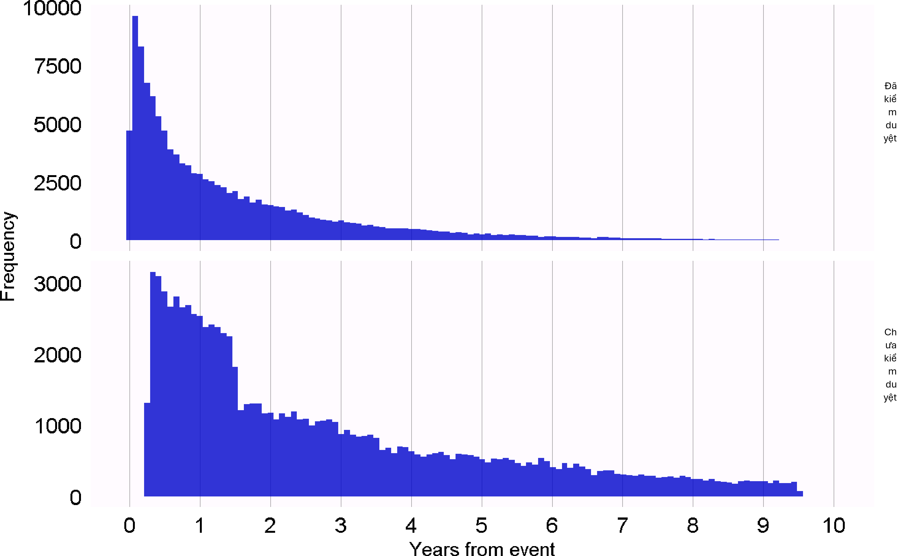
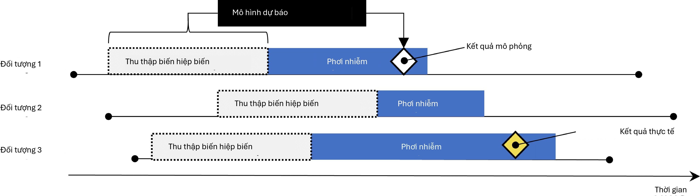
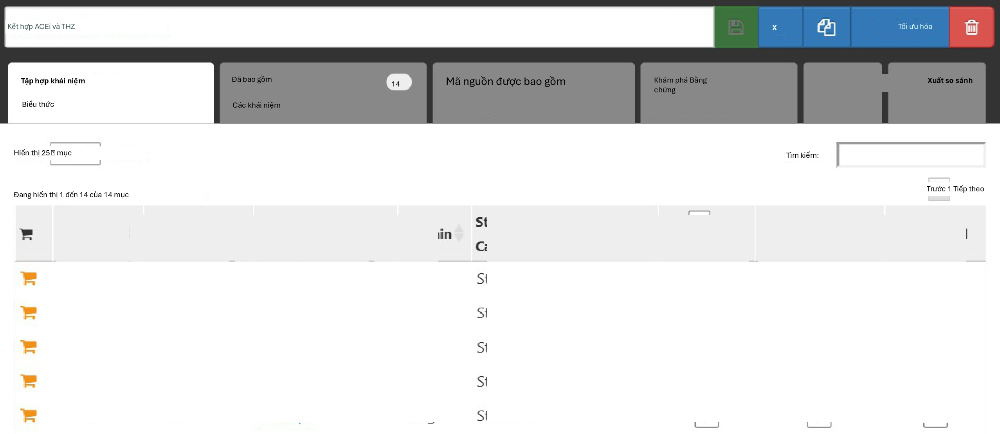
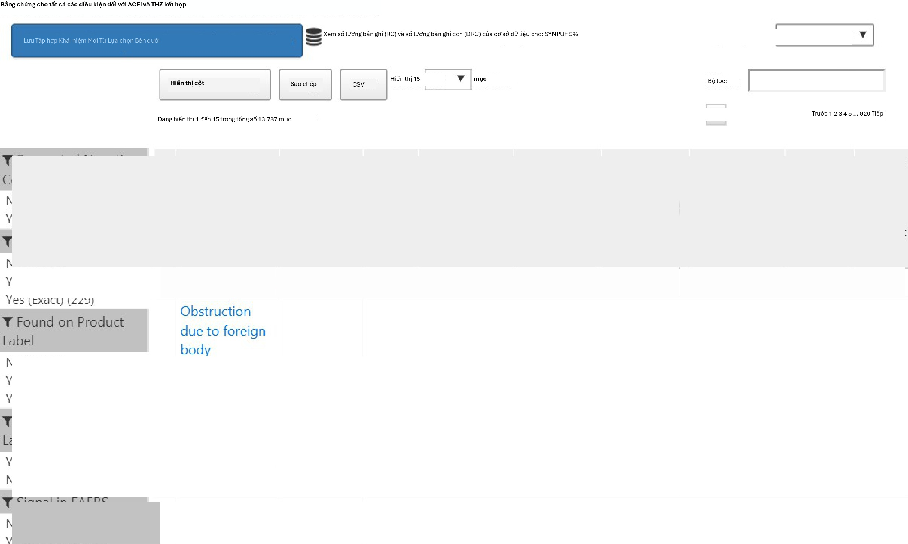
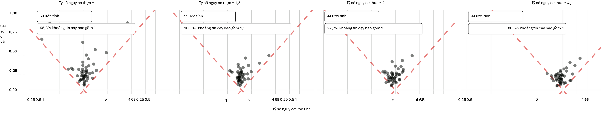
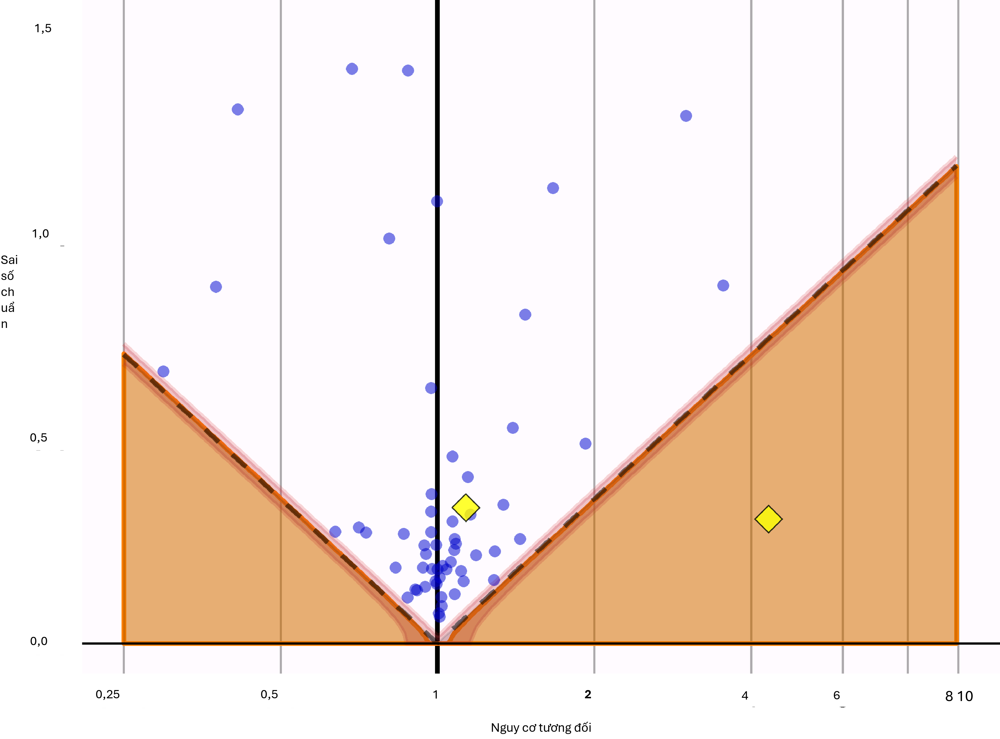
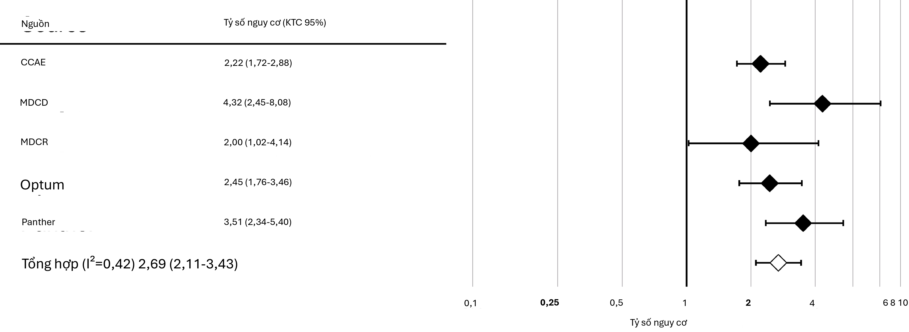
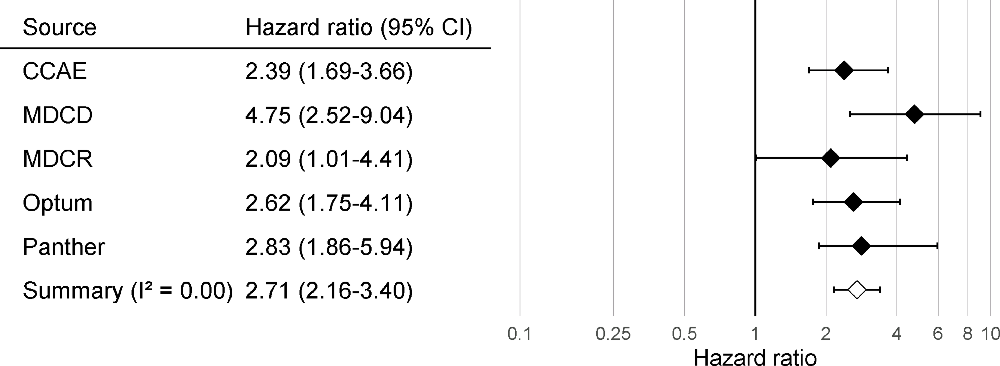
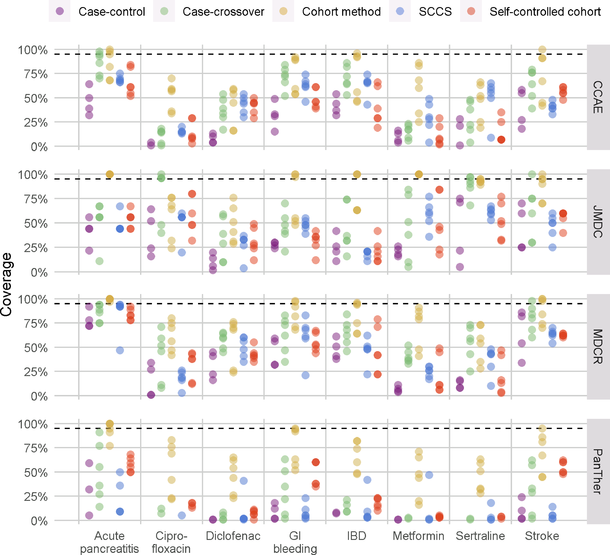

Chương 17: Tính hợp lệ của phương pháp
Tính hợp lệ của phương pháp
Người phụ trách chương: Martijn Schuemie
Khi xem xét tính hợp lệ của phương pháp, chúng tôi nhằm mục đích trả lời câu hỏi: Phương pháp này có hợp lệ để trả lời câu hỏi này không?
“Phương pháp” không chỉ bao gồm thiết kế nghiên cứu mà còn cả dữ liệu và việc triển khai thiết kế đó. Do đó, tính hợp lệ của phương pháp là một khái niệm bao quát; thường không thể quan sát được tính hợp lệ tốt của phương pháp nếu không có chất lượng dữ liệu tốt, tính hợp lệ lâm sàng và tính hợp lệ phần mềm. Những khía cạnh về chất lượng bằng chứng đó nên được giải quyết riêng biệt trước khi chúng ta xem xét tính hợp lệ của phương pháp.
Hoạt động cốt lõi khi thiết lập tính hợp lệ của phương pháp là đánh giá xem các giả định quan trọng trong phân tích đã được đáp ứng hay chưa. Ví dụ, chúng ta giả định rằng việc ghép cặp điểm xu hướng làm cho hai quần thể có thể so sánh được, nhưng chúng ta cần đánh giá xem điều này có đúng hay không. Nếu có thể, các kiểm thử thực nghiệm nên được thực hiện để xác minh các giả định này. Ví dụ, chúng ta có thể tạo các chẩn đoán để chỉ ra rằng hai quần thể của chúng ta thực sự có thể so sánh được trên một loạt các đặc điểm sau khi ghép cặp. Trong OHDSI, chúng tôi đã phát triển nhiều chẩn đoán chuẩn hóa cần được tạo và đánh giá bất cứ khi nào thực hiện phân tích.
Trong chương này, chúng tôi sẽ tập trung vào tính hợp lệ của các phương pháp được sử dụng trong ước tính cấp độ quần thể. Trước tiên, chúng tôi sẽ nêu bật một số chẩn đoán cụ thể cho thiết kế nghiên cứu, sau đó sẽ thảo luận về các chẩn đoán áp dụng cho hầu hết nếu không muốn nói là tất cả các nghiên cứu ước tính cấp độ quần thể. Tiếp theo là mô tả từng bước về cách thực hiện các chẩn đoán này bằng cách sử dụng các công cụ OHDSI. Chúng tôi kết thúc chương này với một chủ đề nâng cao, đánh giá Chuẩn mực Phương pháp OHDSI và ứng dụng của nó đối với Thư viện Phương pháp OHDSI.
Chẩn đoán cụ thể cho thiết kế
Đối với mỗi thiết kế nghiên cứu, có các chẩn đoán cụ thể cho thiết kế đó. Nhiều chẩn đoán trong số này được triển khai và có sẵn trong các gói R của Thư viện Phương pháp OHDSI.
Ví dụ, Mục 12.9 liệt kê một loạt các chẩn đoán được tạo bởi gói CohortMethod, bao gồm:
Phân phối điểm xu hướng để đánh giá khả năng so sánh ban đầu của các nhóm thuần tập.
Mô hình xu hướng để xác định các biến tiềm năng cần được loại trừ khỏi mô hình.
Sự cân bằng hiệp biến để đánh giá liệu việc điều chỉnh điểm xu hướng có làm cho các nhóm thuần tập có thể so sánh được hay không (được đo lường thông qua các hiệp biến cơ bản).
Sự tiêu hao (Attrition) để quan sát xem có bao nhiêu đối tượng bị loại trừ trong các bước phân tích khác nhau, điều này có thể cung cấp thông tin về khả năng khái quát hóa kết quả cho các nhóm thuần tập quan tâm ban đầu.
Công suất (Power) để đánh giá xem có đủ dữ liệu để trả lời câu hỏi hay không.
Đường cong Kaplan Meier để đánh giá thời gian khởi phát điển hình và liệu giả định về tính tỷ lệ làm cơ sở cho các mô hình Cox có được đáp ứng hay không.
Các thiết kế nghiên cứu khác yêu cầu các chẩn đoán khác nhau để kiểm tra các giả định khác nhau trong các thiết kế đó. Ví dụ, đối với thiết kế chuỗi ca tự kiểm soát (SCCS), chúng ta có thể kiểm tra giả định cần thiết rằng thời điểm kết thúc quan sát là độc lập với kết quả. Giả định này thường bị vi phạm trong trường hợp các biến cố nghiêm trọng, có khả năng gây tử vong như nhồi máu cơ tim. Chúng ta có thể đánh giá xem giả định có đúng hay không bằng cách tạo biểu đồ hiển thị trong Hình 18.1, hiển thị biểu đồ tần suất của thời gian đến thời điểm kết thúc quan sát cho những người bị kiểm duyệt (censored) và những người không bị kiểm duyệt. Trong dữ liệu của chúng tôi, chúng tôi coi những người có thời gian quan sát kết thúc tại ngày kết thúc thu thập dữ liệu (ngày mà quan sát dừng lại cho toàn bộ cơ sở dữ liệu, ví dụ: ngày trích xuất hoặc ngày kết thúc nghiên cứu) là không bị kiểm duyệt, và tất cả những người khác là bị kiểm duyệt. Trong Hình 18.1, chúng ta chỉ thấy sự khác biệt nhỏ giữa hai phân phối, cho thấy giả định của chúng tôi là đúng.
Chẩn đoán cho tất cả các ước tính
Bên cạnh các chẩn đoán cụ thể cho thiết kế, còn có một số chẩn đoán áp dụng cho tất cả các phương pháp ước tính hiệu ứng nhân quả. Nhiều chẩn đoán trong số này dựa vào việc sử dụng các giả thuyết kiểm soát, các câu hỏi nghiên cứu mà câu trả lời đã được biết trước. Sử dụng các giả thuyết kiểm soát, chúng ta có thể đánh giá xem thiết kế của mình có tạo ra kết quả phù hợp với sự thật hay không. Các kiểm soát có thể được chia thành kiểm soát âm tính và kiểm soát dương tính.
Kiểm soát âm tính
Kiểm soát âm tính là các cặp phơi nhiễm-kết quả mà người ta tin rằng không có hiệu ứng nhân quả nào tồn tại, và nó bao gồm các kiểm soát âm tính hoặc “điểm cuối làm sai lệch” (Prasad và Jena, 2013) đã được khuyến nghị như một phương tiện để phát hiện nhiễu, (Lipsitch et al., 2010) sai lệch lựa chọn và sai số đo lường. (Arnold et al., 2016) Ví dụ, trong một nghiên cứu (Zaadstra et al., 2008) điều tra mối quan hệ giữa các bệnh thời thơ ấu và bệnh đa xơ cứng (MS) sau này, các tác giả đã bao gồm ba kiểm soát âm tính không được cho là gây ra MS: gãy tay, chấn động và cắt amidan. Hai trong số ba kiểm soát này tạo ra các mối liên quan có ý nghĩa thống kê với MS, cho thấy nghiên cứu có thể bị

Hình 18.1: Thời gian đến thời điểm kết thúc quan sát cho những người bị kiểm duyệt và những người không bị kiểm duyệt.
sai lệch.
Chúng ta nên chọn các kiểm soát âm tính có thể so sánh được với giả thuyết quan tâm của chúng ta, nghĩa là chúng ta thường chọn các cặp phơi nhiễm-kết quả có cùng phơi nhiễm với giả thuyết quan tâm (được gọi là “kiểm soát kết quả”) hoặc cùng kết quả (“kiểm soát phơi nhiễm”). Các kiểm soát âm tính của chúng ta cũng nên đáp ứng các tiêu chí sau:
Phơi nhiễm không nên gây ra kết quả. Một cách để suy nghĩ về nguyên nhân là suy nghĩ về phản thực tế: liệu kết quả có thể được gây ra (hoặc ngăn ngừa) nếu một bệnh nhân không bị phơi nhiễm, so với việc nếu bệnh nhân đó đã bị phơi nhiễm không? Đôi khi điều này rất rõ ràng, ví dụ: ACEi được biết là gây ra phù mạch. Những lần khác, điều này ít rõ ràng hơn nhiều. Ví dụ, một loại thuốc có thể gây tăng huyết áp do đó có thể gián tiếp gây ra các bệnh tim mạch là hậu quả của tăng huyết áp.
Phơi nhiễm cũng không nên ngăn ngừa hoặc điều trị kết quả. Đây chỉ là một mối quan hệ nhân quả khác cần phải vắng mặt nếu chúng ta tin rằng kích thước hiệu ứng thực (ví dụ: tỷ số nguy cơ) là 1.
Kiểm soát âm tính nên tồn tại trong dữ liệu, lý tưởng nhất là với số lượng đủ lớn. Chúng tôi cố gắng đạt được điều này bằng cách ưu tiên các ứng viên kiểm soát âm tính dựa trên tỷ lệ hiện mắc.
Các kiểm soát âm tính lý tưởng nhất nên độc lập. Ví dụ, chúng ta nên tránh có các kiểm soát âm tính là tổ tiên của nhau (ví dụ: “móng chọc thịt” và “móng chọc thịt bàn chân”) hoặc anh em (ví dụ: “gãy xương đùi trái” và “gãy xương đùi phải”).
Các kiểm soát âm tính lý tưởng nhất nên có một số tiềm năng gây sai lệch. Ví dụ, chữ số cuối cùng trong số an sinh xã hội của một người về cơ bản là một số ngẫu nhiên, và
không có khả năng cho thấy sự gây nhiễu. Do đó, nó không nên được sử dụng làm kiểm soát âm tính.
Một số người lập luận rằng các kiểm soát âm tính cũng nên có cấu trúc gây nhiễu giống như cặp phơi nhiễm-kết quả quan tâm. (Lipsitch et al., 2010) Tuy nhiên, chúng tôi tin rằng cấu trúc gây nhiễu này là không thể biết được; các mối quan hệ giữa các biến được tìm thấy trong thực tế thường phức tạp hơn nhiều so với những gì mọi người tưởng tượng. Ngoài ra, ngay cả khi cấu trúc biến nhiễu đã được biết, thì cũng khó có khả năng tồn tại một kiểm soát âm tính có cấu trúc biến nhiễu chính xác như vậy nhưng lại thiếu hiệu ứng nhân quả trực tiếp. Vì lý do này, trong OHDSI, chúng tôi dựa vào một số lượng lớn các kiểm soát âm tính, giả định rằng một tập hợp như vậy đại diện cho nhiều loại sai lệch khác nhau, bao gồm cả những loại sai lệch có trong giả thuyết quan tâm.
Sự vắng mặt của mối quan hệ nhân quả giữa phơi nhiễm và kết quả hiếm khi được ghi lại. Thay vào đó, chúng ta thường đưa ra giả định rằng việc thiếu bằng chứng về một mối quan hệ ngụ ý sự thiếu hụt mối quan hệ đó. Giả định này có nhiều khả năng đúng hơn nếu cả phơi nhiễm và kết quả đều đã được nghiên cứu rộng rãi, vì vậy một mối quan hệ có thể đã được phát hiện. Ví dụ, việc thiếu bằng chứng cho một loại thuốc hoàn toàn mới có khả năng ngụ ý sự thiếu hiểu biết, không phải là sự thiếu hụt mối quan hệ. Với nguyên tắc này, chúng tôi đã phát triển một quy trình bán tự động để lựa chọn các kiểm soát âm tính. (Voss et al., 2016) Tóm lại, thông tin từ tài liệu, nhãn sản phẩm và báo cáo tự nguyện được tự động trích xuất và tổng hợp để tạo ra một danh sách ứng viên kiểm soát âm tính. Danh sách này sau đó phải trải qua quá trình đánh giá thủ công, không chỉ để xác minh rằng việc trích xuất tự động là chính xác mà còn để áp đặt các tiêu chí bổ sung như tính hợp lý về mặt sinh học.
Kiểm soát dương tính
Để hiểu hành vi của một phương pháp khi rủi ro tương đối thực nhỏ hơn hoặc lớn hơn một đòi hỏi phải sử dụng các kiểm soát dương tính nơi giả thuyết không (null) được tin là không đúng. Thật không may, các kiểm soát dương tính thực tế cho nghiên cứu quan sát có xu hướng gây rắc rối vì ba lý do. Thứ nhất, trong hầu hết các bối cảnh nghiên cứu, ví dụ khi so sánh hiệu quả của hai phương pháp điều trị, có sự khan hiếm các kiểm soát dương tính liên quan đến bối cảnh cụ thể đó. Thứ hai, ngay cả khi có các kiểm soát dương tính, kích thước hiệu ứng có thể không được biết với độ chính xác cao và thường phụ thuộc vào quần thể mà người ta đo lường nó. Thứ ba, khi các phương pháp điều trị được biết rộng rãi là gây ra một kết quả cụ thể, điều này định hình hành vi của các bác sĩ kê đơn thuốc, ví dụ bằng cách thực hiện các hành động để giảm thiểu rủi ro của các kết quả không mong muốn, từ đó làm cho các kiểm soát dương tính trở nên vô dụng như một phương tiện để đánh giá. (Noren et al., 2014)
Trong OHDSI, do đó chúng tôi sử dụng các kiểm soát dương tính tổng hợp, (Schuemie et al., 2018a) được tạo ra bằng cách sửa đổi một kiểm soát âm tính thông qua việc tiêm thêm các trường hợp kết quả mô phỏng trong thời gian có nguy cơ phơi nhiễm. Ví dụ, giả sử rằng, trong quá trình phơi nhiễm với ACEi, n trường hợp kết quả kiểm soát âm tính của chúng ta là “móng chọc thịt” đã được quan sát. Nếu bây giờ chúng ta thêm n trường hợp mô phỏng bổ sung trong quá trình phơi nhiễm, chúng ta đã tăng gấp đôi rủi ro. Vì đây là một kiểm soát âm tính, rủi ro tương đối so với phản thực tế là một, nhưng sau khi tiêm, nó trở thành hai.
Một vấn đề quan trọng là việc bảo tồn sự gây nhiễu. Các kiểm soát âm tính có thể cho thấy sự gây nhiễu mạnh, nhưng nếu chúng ta tiêm thêm các kết quả một cách ngẫu nhiên, những kết quả mới này
sẽ không bị gây nhiễu, và do đó chúng ta có thể lạc quan trong việc đánh giá khả năng xử lý sự gây nhiễu đối với các kiểm soát dương tính. Để bảo tồn sự gây nhiễu, chúng ta muốn các kết quả mới cho thấy các mối liên quan tương tự với các hiệp biến cụ thể của đối tượng cơ bản như các kết quả ban đầu. Để đạt được điều này, đối với mỗi kết quả, chúng tôi huấn luyện một mô hình để dự đoán tỷ lệ sống sót đối với kết quả trong quá trình phơi nhiễm bằng cách sử dụng các hiệp biến được ghi lại trước khi phơi nhiễm. Các hiệp biến này bao gồm nhân khẩu học, cũng như tất cả các chẩn đoán, phơi nhiễm thuốc, phép đo và thủ thuật y tế đã được ghi lại. Một mô hình hồi quy Poisson được chuẩn hóa L1 (Suchard et al., 2013) sử dụng kiểm chứng chéo 10 lần để chọn siêu tham số chuẩn hóa phù hợp với mô hình dự đoán. Sau đó, chúng tôi sử dụng các tỷ lệ dự đoán để lấy mẫu các kết quả mô phỏng trong quá trình phơi nhiễm để tăng kích thước hiệu ứng thực lên mức mong muốn. Do đó, kiểm soát dương tính thu được chứa cả kết quả thực và kết quả mô phỏng.
Hình 18.2 mô tả quy trình này. Lưu ý rằng mặc dù quy trình này mô phỏng một số nguồn sai lệch quan trọng, nhưng nó không nắm bắt được tất cả. Ví dụ, một số hiệu ứng của sai số đo lường không có mặt. Các kiểm soát dương tính tổng hợp ngụ ý giá trị dự đoán dương tính và độ nhạy không đổi, điều này có thể không đúng trong thực tế.

Hình 18.2: Tổng hợp các kiểm soát dương tính từ các kiểm soát âm tính.
Mặc dù chúng tôi đề cập đến một “kích thước hiệu ứng” thực duy nhất cho mỗi kiểm soát, các phương pháp khác nhau ước tính các thống kê khác nhau về hiệu ứng điều trị. Đối với các kiểm soát âm tính, nơi chúng tôi tin rằng không có hiệu ứng nhân quả nào tồn tại, tất cả các thống kê như vậy, bao gồm rủi ro tương đối, tỷ số nguy cơ, tỷ số chênh, tỷ số tỷ lệ hiện mắc, cả có điều kiện và biên, cũng như hiệu ứng điều trị trung bình ở người được điều trị (ATT) và hiệu ứng điều trị trung bình tổng thể (ATE) sẽ giống hệt 1. Quy trình của chúng tôi để tạo ra các kiểm soát dương tính tổng hợp các kết quả với tỷ lệ tỷ lệ hiện mắc không đổi theo thời gian và giữa các bệnh nhân, sử dụng một mô hình có điều kiện trên bệnh nhân nơi tỷ lệ này được giữ không đổi, cho đến điểm mà hiệu ứng biên đạt được. Do đó, kích thước hiệu ứng thực được đảm bảo giữ nguyên là tỷ lệ tỷ lệ hiện mắc biên ở người được điều trị. Theo giả định rằng mô hình kết quả của chúng tôi được sử dụng trong quá trình tổng hợp là đúng, điều này cũng đúng đối với kích thước hiệu ứng có điều kiện và ATE. Vì tất cả các kết quả đều hiếm gặp, các tỷ số chênh gần như giống hệt với rủi ro tương đối.
Đánh giá thực nghiệm
Dựa trên các ước tính của một phương pháp cụ thể cho các kiểm soát âm tính và dương tính, chúng ta có thể hiểu các đặc tính vận hành bằng cách tính toán một loạt các số liệu, ví dụ:
Diện tích dưới đường cong đặc tính vận hành của thiết bị (AUC): khả năng phân biệt giữa các kiểm soát dương tính và âm tính.
Độ bao phủ (Coverage): tần suất kích thước hiệu ứng thực nằm trong khoảng tin cậy 95%.
Độ chính xác trung bình: độ chính xác được tính bằng 1/(𝑠𝑡𝑎𝑛𝑑𝑎𝜏𝑑 𝑒𝜏𝜏𝑜𝜏)2, độ chính xác cao hơn nghĩa là các khoảng tin cậy hẹp hơn. Chúng tôi sử dụng trung bình nhân để tính đến phân phối lệch của độ chính xác.
Sai số bình phương trung bình (MSE): Sai số bình phương trung bình giữa log của kích thước hiệu ứng
ước tính điểm và log của kích thước hiệu ứng thực.
Sai lầm loại 1: Đối với các kiểm soát âm tính, tần suất giả thuyết không bị bác bỏ (tại 𝛼 = 0,05). Điều này tương đương với tỷ lệ dương tính giả và 1 − 𝑠𝑝𝑒𝑐𝑖𝑓𝑖𝑐𝑖𝑡𝑦.
Sai lầm loại 2: Đối với các kiểm soát dương tính, tần suất giả thuyết không bị bác bỏ (tại 𝛼 = 0,05). Điều này tương đương với tỷ lệ âm tính giả và 1 − 𝑠𝑒𝑛𝑠𝑖𝑡𝑖𝑣𝑖𝑡𝑦.
Không thể ước tính: Đối với bao nhiêu kiểm soát mà phương pháp không thể tạo ra ước tính? Có thể có nhiều lý do khiến một ước tính không thể được tạo ra, ví dụ vì không còn đối tượng nào sau khi ghép cặp điểm xu hướng, hoặc vì không còn đối tượng nào mắc kết quả.
Tùy thuộc vào trường hợp sử dụng của chúng ta, chúng ta có thể đánh giá xem các đặc tính vận hành này có phù hợp với mục tiêu của chúng ta hay không. Ví dụ, nếu chúng ta muốn thực hiện phát hiện tín hiệu, chúng ta có thể quan tâm đến sai lầm loại 1 và loại 2, hoặc nếu chúng ta sẵn sàng sửa đổi ngưỡng 𝛼 của mình, chúng ta có thể kiểm tra AUC thay thế.
Hiệu chỉnh giá trị P
Thông thường, sai lầm loại 1 (tại 𝛼 = 0,05) lớn hơn 5%. Nói cách khác, chúng ta thường có khả năng bác bỏ giả thuyết không cao hơn 5% khi trên thực tế giả thuyết không là đúng. Lý do là giá trị p chỉ phản ánh sai số ngẫu nhiên, sai số do có kích thước mẫu hạn chế. Nó không phản ánh sai số hệ thống, ví dụ sai số do gây nhiễu. OHDSI đã phát triển một quy trình để hiệu chỉnh giá trị p nhằm khôi phục sai lầm loại 1 về mức danh nghĩa. (Schuemie et al., 2014) Chúng tôi rút ra một phân phối null thực nghiệm từ các ước tính hiệu ứng thực tế cho các kiểm soát âm tính. Các ước tính kiểm soát âm tính này cho chúng tôi biết những gì có thể mong đợi khi giả thuyết không là đúng, và chúng tôi sử dụng chúng để ước tính một phân phối null thực nghiệm.
Về mặt hình thức, chúng tôi khớp một phân phối xác suất Gaussian với các ước tính, có tính đến
sai số lấy mẫu của mỗi ước tính. Gọi 𝜃̂𝑖 ký hiệu ước tính hiệu ứng log ước tính (tỷ số rủi ro tương đối, chênh hoặc tỷ lệ hiện mắc) từ cặp thuốc-kết quả kiểm soát âm tính thứ 𝑖, và gọi 𝜏̂𝑖 ký hiệu sai số chuẩn ước tính tương ứng, 𝑖 = 1, … , 𝑛. Gọi 𝜃𝑖 ký hiệu kích thước hiệu ứng log thực (giả định bằng 0 cho các kiểm soát âm tính), và gọi 𝛽𝑖 ký hiệu sai lệch thực (nhưng chưa biết) liên quan đến cặp 𝑖, đó là sự khác biệt giữa log của kích thước hiệu ứng thực và log của ước tính mà nghiên cứu sẽ trả về cho kiểm soát 𝑖
nếu nó vô cùng lớn. Như trong tính toán giá trị p tiêu chuẩn, chúng tôi giả định rằng 𝜃̂𝑖 được phân phối bình thường với trung bình 𝜃𝑖 + 𝛽𝑖 và độ lệch chuẩn 𝜏̂𝑖2. Lưu ý rằng trong tính toán giá trị p truyền thống, 𝛽𝑖 luôn được giả định bằng 0, nhưng chúng tôi giả định rằng 𝛽𝑖 phát sinh từ một phân phối bình thường với trung bình 𝜇 và phương sai 𝜎2. Điều này đại diện cho phân phối null (sai lệch). Chúng tôi ước tính 𝜇 và 𝜎2 thông qua khả năng tối đa (maximum likelihood). Tóm lại,
chúng tôi giả định những điều sau:
𝛽𝑖 ∼ 𝑁(𝜇, 𝜎2) và 𝜃̂𝑖 ∼ 𝑁(𝜃𝑖 + 𝛽𝑖, 𝜏𝑖2)
trong đó 𝑁2(𝑎, 𝑏) ký hiệu một phân phối Gaussian với trung bình 𝑎 và phương sai 𝑏, và ước tính
𝜇 và 𝜎 bằng cách tối đa hóa khả năng sau:
𝑖=1
𝐿(𝜇, 𝜎|𝜃, 𝜏) 𝖺 ∏𝑛 ∫ 𝑝(𝜃̂𝑖|𝛽𝑖, 𝜃𝑖, 𝜏̂𝑖)𝑝(𝛽𝑖|𝜇, 𝜎)d𝛽𝑖
mang lại các ước tính khả năng tối đa 𝜇̂ và 𝜎̂. Chúng tôi tính toán một giá trị p đã hiệu chỉnh
sử dụng phân phối null thực nghiệm. Gọi 𝜃̂𝑛+1 ký hiệu log của ước tính hiệu ứng từ một cặp thuốc-kết quả mới, và gọi 𝜏̂𝑛+1 ký hiệu sai số chuẩn ước tính tương ứng. Từ các giả định nêu trên và giả định 𝛽𝑛+1 phát sinh từ cùng một phân phối null, chúng ta có những điều sau:
𝜃̂𝑛+1 ∼ 𝑁(𝜇̂, 𝜎̂ + 𝜏̂𝑛+1)
Khi 𝜃̂𝑛+1 nhỏ hơn 𝜇̂, giá trị p đã hiệu chỉnh một phía cho cặp mới sau đó là
𝜙 𝗅⎜ 𝜃𝑛+1 − 𝜇̂ ⎞⎟
⎝√𝜎̂2 + 𝜏̂𝑛2+1 𝖨
trong đó 𝜙(⋅) ký hiệu hàm phân phối tích lũy của phân phối chuẩn tiêu chuẩn. Khi 𝜃̂𝑛+1 lớn hơn 𝜇̂, giá trị p đã hiệu chỉnh một phía sau đó là
1 − 𝜙 𝗅⎜ 𝜃𝑛+1 − 𝜇̂ ⎞⎟
⎝√𝜎̂2 + 𝜏̂𝑛2+1 𝖨
Hiệu chỉnh khoảng tin cậy
Tương tự, chúng tôi thường quan sát thấy rằng độ bao phủ của khoảng tin cậy 95% nhỏ hơn 95%: kích thước hiệu ứng thực nằm trong khoảng tin cậy 95% ít hơn 95% thời gian. Đối với hiệu chỉnh khoảng tin cậy (Schuemie et al., 2018a), chúng tôi mở rộng khung cho hiệu chỉnh giá trị p bằng cách sử dụng thêm các kiểm soát dương tính của chúng tôi. Thông thường, nhưng không nhất thiết, khoảng tin cậy đã hiệu chỉnh rộng hơn khoảng tin cậy danh nghĩa, phản ánh các vấn đề chưa được tính đến trong quy trình tiêu chuẩn (chẳng hạn như gây nhiễu chưa đo lường, sai lệch lựa chọn và sai số đo lường) nhưng đã được tính đến trong quá trình hiệu chỉnh.
Về mặt hình thức, chúng tôi giả định rằng 𝛽𝑖, sai lệch liên quan đến cặp 𝑖, một lần nữa đến từ một phân phối Gaussian, nhưng lần này sử dụng trung bình và độ lệch chuẩn có liên quan tuyến tính với 𝜃𝑖, kích thước hiệu ứng thực:
trong đó
𝛽𝑖 ∼ 𝑁(𝜇(𝜃𝑖), 𝜎2(𝜃𝑖))
𝜇(𝜃𝑖) = 𝑎 + 𝑏 × 𝜃𝑖 và 𝜎(𝜃𝑖)2 = 𝑐 + 𝑑× ∣ 𝜃𝑖 ∣
Chúng tôi ước tính 𝑎, 𝑏, 𝑐 và 𝑑 bằng cách tối đa hóa khả năng biên (marginalized likelihood) trong đó chúng tôi tích phân 𝛽𝑖 chưa quan sát được:
𝑖=1
𝑙(𝑎, 𝑏, 𝑐, 𝑑|𝜃, 𝜃̂, 𝜏̂) 𝖺 ∏𝑛 ∫ 𝑝(𝜃̂𝑖|𝛽𝑖, 𝜃𝑖, 𝜏̂𝑖)𝑝(𝛽𝑖|𝑎, 𝑏, 𝑐, 𝑑, 𝜃𝑖)d𝛽𝑖,
mang lại các ước tính khả năng tối đa (𝑎̂, 𝑏̂, 𝑐̂, 𝑑̂).
Chúng tôi tính toán một CI đã hiệu chỉnh sử dụng mô hình sai số hệ thống. Gọi 𝜃̂𝑛+1 một lần nữa ký hiệu log của ước tính hiệu ứng cho một kết quả mới quan tâm, và gọi 𝜏̂𝑛+1 ký hiệu sai số chuẩn ước tính tương ứng. Từ các giả định trên, và giả định 𝛽𝑛+1 phát sinh từ cùng một mô hình sai số hệ thống, chúng ta có:
𝜃̂𝑛+1 ∼ 𝑁(𝜃𝑛+1 + 𝑎̂ + 𝑏̂ × 𝜃𝑛+1, 𝑐̂ + 𝑑̂× ∣ 𝜃𝑛+1 ∣ +𝜏̂𝑛2+1).
Chúng tôi tìm giới hạn dưới của CI 95% đã hiệu chỉnh bằng cách giải phương trình này cho 𝜃𝑛+1:
Φ ⎜ ⎟ = 0.025,
𝗅 𝜃𝑛+1 + 𝑎̂ + 𝑏̂ × 𝜃𝑛+1 − 𝜃̂𝑛+1 ⎞
⎝ √(𝑐̂ + 𝑑̂× ∣ 𝜃𝑛+1 ∣) + 𝜏̂𝑛2+1 𝖨
trong đó Φ(⋅) ký hiệu hàm phân phối tích lũy của phân phối chuẩn tiêu chuẩn. Chúng tôi tìm giới hạn trên tương tự cho xác suất 0,975. Chúng tôi xác định ước tính điểm đã hiệu chỉnh bằng cách sử dụng xác suất 0,5.
Cả hiệu chỉnh giá trị p và hiệu chỉnh khoảng tin cậy đều được triển khai trong gói EmpiricalCalibration.
Sao chép trên các địa điểm
Một hình thức xác thực phương pháp khác đến từ việc thực thi nghiên cứu trên một số cơ sở dữ liệu khác nhau đại diện cho các quần thể khác nhau, các hệ thống chăm sóc sức khỏe khác nhau và/hoặc các quy trình thu thập dữ liệu khác nhau. Nghiên cứu trước đây đã chỉ ra rằng việc thực thi cùng một thiết kế
nghiên cứu trên các cơ sở dữ liệu khác nhau có thể tạo ra các ước tính kích thước hiệu ứng khác nhau rất nhiều, (Madigan et al., 2013b) cho thấy rằng hoặc hiệu ứng khác biệt rất lớn đối với các quần thể khác nhau, hoặc thiết kế không giải quyết thỏa đáng các sai lệch khác nhau được tìm thấy trong các cơ sở dữ liệu khác nhau. Trên thực tế, chúng tôi quan sát thấy rằng việc tính đến sai lệch còn lại trong một cơ sở dữ liệu thông qua hiệu chỉnh thực nghiệm các khoảng tin cậy có thể làm giảm đáng kể sự không đồng nhất giữa các nghiên cứu. (Schuemie et al., 2018a)
Một cách để biểu thị sự không đồng nhất giữa các cơ sở dữ liệu là điểm 𝐼2, mô tả tỷ lệ phần trăm của tổng biến thiên giữa các nghiên cứu do sự không đồng nhất thay vì do ngẫu nhiên. (Higgins et al., 2003) Việc phân loại ngây thơ các giá trị cho 𝐼2 sẽ không phù hợp trong mọi hoàn cảnh, mặc dù người ta có thể tạm thời gán các tính từ thấp, trung bình và cao cho các giá trị 𝐼2 lần lượt là 25%, 50% và 75%. Trong một nghiên cứu ước tính hiệu ứng cho nhiều phương pháp điều trị trầm cảm bằng cách sử dụng thiết kế nhóm thuần tập người dùng mới với điều chỉnh điểm xu hướng quy mô lớn, (Schuemie et al., 2018b) chỉ quan sát thấy 58% các ước tính có 𝐼2 dưới 25%. Sau khi hiệu chỉnh thực nghiệm, con số này tăng lên 83%.

Phân tích độ nhạy
Khi thiết kế một nghiên cứu, thường có các lựa chọn thiết kế không chắc chắn. Ví dụ, nên sử dụng ghép cặp điểm xu hướng hay phân tầng? Nếu sử dụng phân tầng, bao nhiêu tầng? Thời gian có nguy cơ thích hợp là bao nhiêu? Khi đối mặt với sự không chắc chắn như vậy, một giải pháp là đánh giá các lựa chọn khác nhau và quan sát độ nhạy của kết quả đối với lựa chọn thiết kế. Nếu ước tính vẫn giữ nguyên dưới nhiều lựa chọn khác nhau, chúng ta có thể nói rằng nghiên cứu là mạnh mẽ đối với sự không chắc chắn.
Định nghĩa về phân tích độ nhạy này không nên bị nhầm lẫn với các định nghĩa được những người khác sử dụng như Rosenbaum (2005), người định nghĩa phân tích độ nhạy là “đánh giá cách các kết luận của một nghiên cứu có thể bị thay đổi bởi các sai lệch ẩn của các mức độ khác nhau.”
Xác thực phương pháp trong thực tế
Ở đây chúng tôi xây dựng dựa trên ví dụ trong Chương 12, nơi chúng tôi điều tra hiệu ứng của thuốc ức chế ACE (ACEi) đối với nguy cơ phù mạch và nhồi máu cơ tim cấp tính (AMI), so với thuốc lợi tiểu thiazide và tương tự thiazide (THZ). Trong chương đó, chúng tôi đã khám phá nhiều chẩn đoán cụ thể cho thiết kế mà chúng tôi đã sử dụng, phương pháp nhóm thuần tập. Ở đây, chúng tôi áp dụng các chẩn đoán bổ sung cũng có thể đã được áp dụng nếu các thiết kế khác được sử dụng. Nếu nghiên cứu được triển khai bằng cách sử dụng ATLAS như được mô tả trong Mục 12.7, các chẩn đoán này có sẵn trong ứng dụng Shiny được bao gồm trong gói R nghiên cứu do ATLAS tạo ra. Nếu nghiên cứu được triển khai bằng cách sử dụng R thay thế, như được mô tả trong Mục 12.8, thì các hàm R
có sẵn trong các gói khác nhau nên được sử dụng, như được mô tả trong các phần tiếp theo.
Lựa chọn kiểm soát âm tính
Chúng ta phải chọn các kiểm soát âm tính, các cặp phơi nhiễm-kết quả mà không có hiệu ứng nhân quả nào được tin là tồn tại. Đối với ước tính hiệu ứng so sánh như nghiên cứu ví dụ của chúng tôi, chúng tôi chọn các kết quả kiểm soát âm tính được tin là không bị gây ra bởi phơi nhiễm mục tiêu cũng như phơi nhiễm so sánh. Chúng tôi muốn đủ các kiểm soát âm tính để đảm bảo rằng chúng tôi có một sự kết hợp đa dạng các sai lệch được thể hiện trong các kiểm soát, và cũng để cho phép hiệu chỉnh thực nghiệm. Theo quy tắc ngón tay cái, chúng tôi thường nhắm tới việc có 50-100 kiểm soát âm tính như vậy. Chúng ta có thể đưa ra các kiểm soát này hoàn toàn thủ công, nhưng may mắn thay, ATLAS cung cấp các tính năng để hỗ trợ việc lựa chọn các kiểm soát âm tính bằng cách sử dụng dữ liệu từ tài liệu, nhãn sản phẩm và các báo cáo tự nguyện.
Để tạo một danh sách ứng viên kiểm soát âm tính, trước tiên chúng ta phải tạo một tập hợp khái niệm chứa tất cả các phơi nhiễm quan tâm. Trong trường hợp này, chúng tôi chọn tất cả các thành phần trong các lớp ACEi và THZ, như được hiển thị trong Hình 18.3.

Hình 18.3: Một tập hợp khái niệm chứa các khái niệm xác định các phơi nhiễm mục tiêu và so sánh.
Tiếp theo, chúng ta đi tới tab “Explore Evidence” (Khám phá bằng chứng) và nhấp vào nút . Việc tạo tổng quan bằng chứng sẽ mất vài phút, sau đó bạn có thể nhấp vào nút . Thao tác này sẽ mở danh sách các kết quả như được hiển thị trong Hình 18.4.
Danh sách này hiển thị các khái niệm tình trạng, cùng với tổng quan về bằng chứng liên kết tình trạng đó với bất kỳ phơi nhiễm nào chúng ta đã xác định. Ví dụ, chúng ta thấy số lượng ấn phẩm liên kết các phơi nhiễm với các kết quả được tìm thấy trong PubMed bằng cách sử dụng nhiều chiến lược khác nhau, số lượng nhãn sản phẩm của các phơi nhiễm quan tâm của chúng ta liệt kê tình trạng đó là một tác dụng phụ có thể xảy ra và số lượng báo cáo tự nguyện. Theo mặc định, danh sách được sắp xếp để hiển thị các ứng viên kiểm soát âm tính trước. Sau đó, nó được sắp xếp theo “Sort Order” (Thứ tự sắp xếp), đại diện cho tỷ lệ hiện mắc của tình trạng trong một tập hợp các cơ sở dữ liệu quan sát. Càng cao

Hình 18.4: Các kết quả kiểm soát ứng viên với tổng quan về bằng chứng được tìm thấy trong tài liệu, nhãn sản phẩm và báo cáo tự nguyện.
Thứ tự sắp xếp, tỷ lệ hiện mắc càng cao. Mặc dù tỷ lệ hiện mắc trong các cơ sở dữ liệu này có thể không tương ứng với tỷ lệ hiện mắc trong cơ sở dữ liệu mà chúng ta muốn chạy nghiên cứu, nhưng nó có khả năng là một sự xấp xỉ tốt.
Bước tiếp theo là đánh giá thủ công danh sách ứng viên, thường bắt đầu từ trên cùng, tức là với tình trạng phổ biến nhất, và làm việc xuống dưới cho đến khi chúng ta hài lòng rằng mình đã có đủ. Một cách điển hình để thực hiện việc này là xuất danh sách sang tệp CSV (giá trị phân tách bằng dấu phẩy) và để các bác sĩ lâm sàng đánh giá chúng, xem xét các tiêu chí được đề cập trong Mục 18.2.1.
Đối với nghiên cứu ví dụ của chúng tôi, chúng tôi chọn 76 kiểm soát âm tính được liệt kê trong Phụ lục C.1.
Bao gồm các kiểm soát
Khi chúng ta đã xác định tập hợp các kiểm soát âm tính của mình, chúng ta phải bao gồm chúng trong nghiên cứu của mình. Trước tiên, chúng ta phải xác định một số logic để biến các khái niệm tình trạng kiểm soát âm tính của chúng ta thành các nhóm thuần tập kết quả. Mục 12.7.3 thảo luận về cách ATLAS cho phép tạo các nhóm thuần tập như vậy dựa trên một vài lựa chọn mà người dùng phải thực hiện. Thông thường, chúng ta chỉ đơn giản chọn tạo một nhóm thuần tập dựa trên bất kỳ lần xuất hiện nào của một khái niệm kiểm soát âm tính hoặc bất kỳ hậu duệ nào của nó. Nếu nghiên cứu được triển khai trong R, thì SQL (Ngôn ngữ truy vấn cấu trúc) có thể được sử dụng để xây dựng các nhóm thuần tập kiểm soát âm tính. Chương 9 mô tả cách các nhóm thuần tập có thể được tạo bằng SQL và
R. Chúng tôi để lại cho độc giả bài tập viết SQL và R phù hợp.
Các công cụ OHDSI cũng cung cấp chức năng tự động tạo và bao gồm các kiểm soát dương tính có nguồn gốc từ các kiểm soát âm tính. Chức năng này có thể được tìm thấy trong phần Evaluation Settings (Cài đặt đánh giá) trong ATLAS được mô tả trong Mục 12.7.3, và nó được thực-
hiện trong hàm synthesizePositiveControls trong gói MethodEvaluation. Ở đây, chúng tôi tạo ba kiểm soát dương tính cho mỗi kiểm soát âm tính, với kích thước hiệu ứng thực là 1,5, 2 và 4, sử dụng mô hình sống sót:
thư viện (Phương thức đánh giá)
# Tạo một khung dữ liệu với tất cả các cặp phơi nhiễm-
# kết quả kiểm soát âm tính, chỉ sử dụng phơi nhiễm mục tiêu (ACEi = 1).
eoPairs <- data.frame(exposureId = 1,
outcomeId = ncs)
chiếc <- tổng hợpPositiveControls( ConnectionDetails = ConnectionDetails, cdmDatabaseSchema = cdmDbSchema, ExposureDatabaseSchema = thuần tậpDbSchema, ExposureTable = thuần tậpBảng, resultDatabaseSchema = thuần tậpDbSchema, kết quảTable = thuần tậpBảng, đầu raDatabaseSchema = thuần tậpDbSchema, đầu raBảng = thuần tậpBảng, createOutputTable = FALSE,
modelType = "survival", firstExposureOnly = TRUE, firstOutcomeOnly = TRUE, removePeopleWithPriorOutcomes = TRUE, washoutPeriod = 365,
rủi roWindowStart = 1,
riskWindowEnd = 0, endAnchor = "kết thúc đoàn hệ",
exposureOutcomePairs = eoPairs, effectSizes = c(1.5, 2, 4), cdmVersion = cdmVersion,
WorkFolder = file.path(outputFolder, "pcSynt tổng hợp"))
Lưu ý rằng chúng ta phải bắt chước các cài đặt thời gian có nguy cơ được sử dụng trong thiết kế nghiên cứu ước tính của mình. Hàm synthesizePositiveControls sẽ trích xuất thông tin về các phơi nhiễm và các kết quả kiểm soát âm tính, khớp các mô hình kết quả cho mỗi cặp phơi nhiễm-kết quả và tổng hợp các kết quả. Các nhóm thuần tập kết quả kiểm soát dương tính sẽ được thêm vào bảng nhóm thuần tập được chỉ định bởi cohortDbSchema và cohortTable. Khung dữ liệu pcs thu được chứa thông tin về các kiểm soát dương tính đã tổng hợp.
Tiếp theo, chúng ta phải thực thi cùng một nghiên cứu được sử dụng để ước tính hiệu ứng quan tâm để cũng ước tính các hiệu ứng cho các kiểm soát âm tính và dương tính. Việc thiết lập tập hợp các kiểm soát âm tính trong hộp thoại so sánh trong ATLAS hướng dẫn ATLAS tính toán các ước tính cho các kiểm soát này. Tương tự, việc chỉ định rằng các kiểm soát dương tính được tạo trong Evaluation Settings sẽ bao gồm chúng trong phân tích của chúng ta. Trong R, các kiểm soát âm tính và dương tính nên được xử lý như bất kỳ kết quả nào khác. Tất cả các gói ước tính trong Thư viện Phương pháp OHDSI đều cho phép ước tính nhiều hiệu ứng một cách hiệu quả.
Hiệu suất thực nghiệm
Hình 18.5 hiển thị các kích thước hiệu ứng ước tính cho các kiểm soát âm tính và dương tính được bao gồm trong nghiên cứu ví dụ của chúng tôi, phân tầng theo kích thước hiệu ứng thực. Biểu đồ này được bao gồm trong ứng dụng Shiny đi kèm với gói R nghiên cứu do ATLAS tạo ra và có thể được tạo bằng hàm plotControls trong gói MethodEvaluation. Lưu ý rằng số lượng kiểm soát thường thấp hơn những gì đã được xác định vì không có đủ dữ liệu để tạo ước tính hoặc để tổng hợp một kiểm soát dương tính.

Hình 18.5: Các ước tính cho các kiểm soát âm tính (tỷ số nguy cơ thực = 1) và dương tính (tỷ số nguy cơ thực > 1). Mỗi dấu chấm đại diện cho một kiểm soát. Các ước tính dưới đường nét đứt có khoảng tin cậy không bao gồm kích thước hiệu ứng thực.
Dựa trên các ước tính này, chúng ta có thể tính toán các số liệu được hiển thị trong Bảng 18.1 bằng cách sử dụng
hàm tính toánMetrics trong gói MethodEvaluation.
Bảng 18.1: Các số liệu hiệu suất phương pháp được rút ra từ các ước tính kiểm soát âm tính và dương tính.
| Số liệu | Giá trị |
|---|---|
| AUC |
|
| Độ bao phủ |
|
| Độ chính xác trung bình |
|
| MSE |
|
| Sai lầm loại 1 |
|
| Sai lầm loại 2 |
|
| Không thể ước tính |
|
Chúng ta thấy rằng độ bao phủ và sai lầm loại 1 rất gần với các giá trị danh nghĩa lần lượt là 95% và 5%, và AUC rất cao. Điều này chắc chắn không phải lúc nào cũng như vậy.
Lưu ý rằng mặc dù trong Hình 18.5 không phải tất cả các khoảng tin cậy đều bao gồm một khi tỷ số nguy cơ thực là một, sai lầm loại 1 trong Bảng 18.1 là 0%. Đây là một tình huống đặc biệt, do thực tế là các khoảng tin cậy trong gói Cyclops được ước tính bằng cách lập hồ sơ khả năng, chính xác hơn các phương pháp truyền thống nhưng có thể dẫn đến các khoảng tin cậy không đối xứng. Thay vào đó, giá trị p được tính toán giả định các khoảng tin cậy đối xứng, và đây là những gì được sử dụng để tính sai lầm loại 1.
Hiệu chỉnh giá trị P
Chúng ta có thể sử dụng các ước tính cho các kiểm soát âm tính của mình để hiệu chỉnh các giá trị p. Điều này được thực hiện tự động trong ứng dụng Shiny và có thể được thực hiện thủ công trong R. Giả sử chúng ta đã tạo đối tượng tóm tắt summ như được mô tả trong Mục 12.8.6, chúng ta có thể vẽ biểu đồ hiệu ứng hiệu chỉnh thực nghiệm:
# Estimates for negative controls (ncs) and outcomes of interest (ois):
ncEstimates <- summ[summ$outcomeId %in% ncs, ] oiEstimates <- summ[summ$outcomeId %in% ois, ]
library(EmpiricalCalibration) plotCalibrationEffect(logRrNegatives = ncEstimates$logRr,

Hình 18.6: Hiệu chỉnh giá trị p: các ước tính dưới đường nét đứt có giá trị p thông thường
< 0,05. Các ước tính trong vùng bóng mờ có giá trị p đã hiệu chỉnh < 0,05. Dải hẹp xung quanh mép của vùng bóng mờ biểu thị khoảng tin cậy 95%. Các dấu chấm chỉ ra các kiểm soát âm tính. Các viên kim cương chỉ ra các kết quả quan tâm.
Trong Hình 18.6, chúng ta thấy rằng vùng bóng mờ gần như trùng khớp chính xác với vùng được biểu thị bởi các đường nét đứt, cho thấy hầu như không quan sát thấy sai lệch nào cho các kiểm soát âm tính. Một trong những kết quả quan tâm (AMI) nằm trên đường nét đứt và vùng bóng mờ, cho thấy chúng ta không thể bác bỏ giả thuyết không theo cả giá trị p đã hiệu chỉnh và chưa hiệu chỉnh. Kết quả còn lại (phù mạch) nổi bật rõ ràng so với kiểm soát âm tính và nằm gọn trong vùng mà cả giá trị p đã hiệu chỉnh và chưa hiệu chỉnh đều nhỏ hơn 0,05.
Chúng ta có thể tính toán các giá trị p đã hiệu chỉnh:
null <- fitNull(logRr = ncEstimates$logRr,
seLogRr = ncEstimates$seLogRr)
calibrateP(null,
logRr= oiEstimates$logRr, seLogRr = oiEstimates$seLogRr)
## [1] 1.604351e-06 7.159506e-01
Và đối chiếu các giá trị này với các giá trị p chưa hiệu chỉnh:
oiEstimates$p
## [1] [1] 1.483652e-06 7.052822e-01
Như mong đợi, vì hầu như không có hoặc không có sai lệch nào được quan sát thấy, các giá trị p chưa hiệu chỉnh và đã hiệu chỉnh rất giống nhau.
Hiệu chỉnh khoảng tin cậy
Tương tự, chúng ta có thể sử dụng các ước tính cho các kiểm soát âm tính và dương tính của mình để hiệu chỉnh các khoảng tin cậy. Ứng dụng Shiny tự động báo cáo các khoảng tin cậy đã hiệu chỉnh. Trong R, chúng ta có thể hiệu chỉnh các khoảng bằng cách sử dụng các hàm fitSystematicErrorModel và calibrateConfidenceInterval trong gói EmpiricalCalibration, như được mô tả chi tiết trong tài liệu giới thiệu “Hiệu chỉnh thực nghiệm các khoảng tin cậy”.
Trước khi hiệu chỉnh, các tỷ số nguy cơ ước tính (khoảng tin cậy 95%) là 4,32 (2,45 - 8,08) và 1,13 (0,59 - 2,18), tương ứng cho phù mạch và AMI. Các tỷ số nguy cơ đã hiệu chỉnh là 4,75 (2,52 - 9,04) và 1,15 (0,58 - 2,30).
Sự không đồng nhất giữa các cơ sở dữ liệu
Cũng giống như chúng ta đã thực hiện phân tích của mình trên một cơ sở dữ liệu, trong trường hợp này là cơ sở dữ liệu IBM MarketScan Medicaid (MDCD), chúng ta cũng có thể chạy cùng một mã phân tích trên các cơ sở dữ liệu khác tuân thủ Mô hình dữ liệu chung (CDM). Hình 18.7 hiển thị biểu đồ rừng và các ước tính phân tích tổng hợp (giả định hiệu ứng ngẫu nhiên) (DerSimonian và Laird, 1986) trên tổng số năm cơ sở dữ liệu cho kết quả phù mạch. Hình này được tạo bằng cách sử dụng hàm plotMetaAnalysisForest trong gói EvidenceSynthesis.
Mặc dù tất cả các khoảng tin cậy đều trên một, cho thấy sự đồng thuận về thực tế là có một hiệu ứng, 𝐼2 cho thấy sự không đồng nhất giữa các cơ sở dữ liệu. Tuy nhiên, nếu chúng ta tính toán 𝐼2 bằng cách sử dụng các khoảng tin cậy đã hiệu chỉnh như được hiển thị trong Hình 18.8, chúng ta thấy rằng sự không đồng nhất này có thể được giải thích bởi sai lệch được đo lường trong mỗi cơ sở dữ liệu thông qua các kiểm soát âm tính và dương tính. Hiệu chỉnh thực nghiệm dường như tính đến sai lệch này một cách thích hợp.

Hình 18.7: Các ước tính kích thước hiệu ứng và khoảng tin cậy (CI) 95% từ năm cơ sở dữ liệu khác nhau và một ước tính phân tích tổng hợp khi so sánh thuốc ức chế ACE với thuốc lợi tiểu thiazide và tương tự thiazide đối với nguy cơ phù mạch.

Hình 18.8: Các ước tính kích thước hiệu ứng đã hiệu chỉnh và khoảng tin cậy (CI) 95% từ năm cơ sở dữ liệu khác nhau và một ước tính phân tích tổng hợp cho tỷ số nguy cơ của phù mạch khi so sánh thuốc ức chế ACE với thuốc lợi tiểu thiazide và tương tự thiazide.
- Chuẩn mực Phương pháp OHDSI 351
Phân tích độ nhạy
Một trong những lựa chọn thiết kế trong phân tích của chúng tôi là sử dụng phương pháp ghép cặp theo tỷ lệ biến đổi dựa trên điểm xu hướng (propensity score). Tuy nhiên, chúng tôi cũng có thể sử dụng phương pháp phân tầng dựa trên điểm xu hướng. Vì chúng tôi không chắc chắn về lựa chọn này, chúng tôi có thể quyết định sử dụng cả hai. Bảng 18.2 cho thấy các ước tính về quy mô hiệu ứng cho AMI và phù mạch, cả đã hiệu chuẩn và chưa hiệu chuẩn, khi sử dụng phương pháp ghép cặp theo tỷ lệ biến đổi và phân tầng (với 10 tầng có kích thước bằng nhau).
Bảng 18.2: Các tỷ số nguy cơ (khoảng tin cậy 95%) đã hiệu chuẩn và chưa hiệu chuẩn cho hai biến thể phân tích.
| Biến cố |
|
|
|
|---|---|---|---|
| Phù mạch |
|
|
|
| Phù mạch |
|
|
|
| Nhồi máu cơ tim cấp |
|
|
|
| Nhồi máu cơ tim cấp |
|
|
|
Chúng ta thấy rằng các ước tính từ phân tích ghép cặp và phân tầng có sự thống nhất cao, với các khoảng tin cậy cho phân tầng nằm hoàn toàn bên trong các khoảng tin cậy cho ghép cặp. Điều này cho thấy sự không chắc chắn của chúng ta về lựa chọn thiết kế này không ảnh hưởng đến tính hợp lệ của các ước tính. Phân tầng dường như mang lại cho chúng ta nhiều sức mạnh thống kê hơn (khoảng tin cậy hẹp hơn), điều này không gây ngạc nhiên vì ghép cặp dẫn đến mất dữ liệu, trong khi phân tầng thì không. Cái giá phải trả cho việc này có thể là sự gia tăng sai lệch do nhiễu dư thừa trong nội bộ tầng, mặc dù chúng ta không thấy bằng chứng nào về sự gia tăng sai lệch được phản ánh trong các khoảng tin cậy đã hiệu chuẩn.
Tiêu chuẩn đánh giá phương pháp OHDSI
Mặc dù thực hành được khuyến nghị là đánh giá hiệu năng của phương pháp một cách thực nghiệm trong bối cảnh được áp dụng, sử dụng các đối chứng âm và dương tương tự như các cặp phơi nhiễm-kết cục quan tâm (ví dụ: sử dụng cùng một phơi nhiễm hoặc cùng một kết cục) và trên cơ sở dữ liệu được sử dụng trong nghiên cứu, thì việc đánh giá hiệu năng của phương pháp nói chung cũng có giá trị. Đây là lý do tại sao Tiêu chuẩn đánh giá phương pháp OHDSI (OHDSI Methods Evaluation Benchmark) được phát triển. Tiêu chuẩn này đánh giá hiệu năng bằng cách sử dụng một loạt các câu hỏi đối chứng, bao gồm cả các câu hỏi với kết cục mãn tính hoặc cấp tính, và phơi nhiễm dài hạn hoặc ngắn hạn. Kết quả trên tiêu chuẩn đánh giá này có thể giúp chứng minh tính hữu ích tổng thể của một phương pháp, và có thể được sử dụng để hình thành niềm tin tiên nghiệm (prior belief) về hiệu năng của
một phương pháp khi chưa có sẵn đánh giá thực nghiệm cụ thể theo bối cảnh. Tiêu chuẩn đánh giá bao gồm 200 đối chứng âm được lựa chọn cẩn thận, có thể được phân tầng thành tám danh mục, với các đối chứng trong mỗi danh mục chia sẻ cùng một phơi nhiễm hoặc cùng một kết cục. Từ 200 đối chứng âm này, 600 đối chứng dương tổng hợp được rút ra như được mô tả trong Mục 18.2.2. Để đánh giá một phương pháp, nó phải được sử dụng để tạo ra các ước tính quy mô hiệu ứng cho tất cả các đối chứng, sau đó các chỉ số được mô tả trong Mục 18.2.3 có thể được tính toán. Tiêu chuẩn đánh giá này được công khai và có thể được triển khai như được mô tả trong vignette 'Running the OHDSI Methods Benchmark' trong gói MethodEvaluation.
Chúng tôi đã chạy tất cả các phương pháp trong Thư viện phương pháp OHDSI thông qua tiêu chuẩn đánh giá này, với các lựa chọn phân tích khác nhau cho mỗi phương pháp. Ví dụ, phương pháp thuần tập đã được đánh giá bằng cách sử dụng ghép cặp điểm xu hướng, phân tầng và trọng số. Thí nghiệm này được thực hiện trên bốn cơ sở dữ liệu chăm sóc sức khỏe quan sát quy mô lớn. Các kết quả, có thể xem trong một ứng dụng Shiny trực tuyến1, cho thấy mặc dù một số phương pháp cho thấy AUC cao (khả năng phân biệt đối chứng dương với đối chứng âm), hầu hết các phương pháp trong hầu hết các bối cảnh đều cho thấy tỷ lệ sai lầm loại 1 cao và độ bao phủ của khoảng tin cậy 95% thấp, như được hiển thị trong Hình 18.9.
Điều này nhấn mạnh nhu cầu về đánh giá thực nghiệm và hiệu chuẩn: nếu không có đánh giá thực nghiệm nào được thực hiện, điều đúng với hầu hết các nghiên cứu quan sát đã được công bố, chúng ta phải giả định một niềm tin tiên nghiệm được thông báo bởi các kết quả trong Hình 18.9, và kết luận rằng khả năng cao là quy mô hiệu ứng thực sự không nằm trong khoảng tin cậy 95%!
Đánh giá của chúng tôi về các thiết kế trong Thư viện phương pháp cũng cho thấy rằng hiệu chuẩn thực nghiệm khôi phục tỷ lệ sai lầm loại 1 và độ bao phủ về các giá trị danh nghĩa của chúng, mặc dù thường phải trả giá bằng việc tăng tỷ lệ sai lầm loại 2 và giảm độ chính xác.
Tóm tắt

A method’s validity depends on whether the assumptions underlying the method are met.
Where possible, these assumptions should be empirically tested using study diagnostics.
Control hypotheses, questions where the answer is known, should be used to evaluate whether a specific study design produces answers in line with the truth.
Often, p-values and confidence intervals do not demonstrate nominal charac-teristics as measured using control hypotheses.
These characteristics can often be restored to nominal using empirical calibra-tion.
1http://data.ohdsi.org/MethodEvalViewer/
- Tóm tắt 353

Hình 18.9: Độ bao phủ của khoảng tin cậy 95% cho các phương pháp trong Thư viện phương pháp. Mỗi dấu chấm đại diện cho hiệu năng của một tập hợp các lựa chọn phân tích cụ thể. Đường đứt nét chỉ ra hiệu năng danh nghĩa (độ bao phủ 95%). SCCS = Chuỗi trường hợp tự kiểm soát (Self-Controlled Case Series), GI = Tiêu hóa, IBD = bệnh viêm ruột.
– Study diagnostics can be used to guide analytic design choices and adapt the protocol, as long as the researcher remains blinded to the effect of interest to avoid p-hacking.